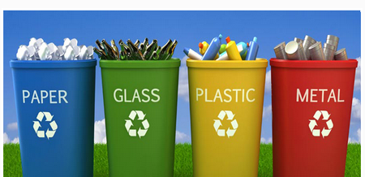
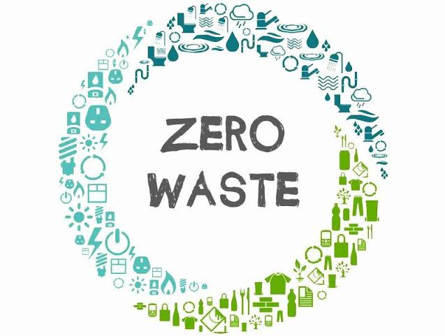

What is Waste Recycling?
Recycling is processing used materials (waste) into new, useful products. This is done to reduce the use of raw materials that would have been used.
Recycling also uses less energy and and great way of controlling air, water and land pollution. Effective recycling starts with household
(or the place where the waste was created). In many serious countries, the authorities help households with bin bags with labels on them.
Households then sort out the waste themselves and place them in the right bags for collection. This makes the work less difficult.
Paper waste:
Paper waste items include books, newspapers, magazines, cardboard boxes and envelopes.
Plastic waste:
Items include plastic bags, water bottles, rubber bags and plastic wrappers.
Glass waste:
All glass products like broken bottles, beer and wine bottles can be recycled.
Metal waste:
Cans from soda drink, tomato, fruit cans and all other cans can be recycled. Did you know: Recycling just 1 ton of aluminum cans conserves more than
207 million Btu, the equivalent of 36 barrels of oil, or 1,665 gallons of gasoline.

When these are collected, the are sent to the recycling unit, where all the waste from each type are combined, crushed, melted and processed
into new materials.
Next
Previous